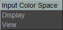

The OCIO Menu

The OCIO menu allows you to control the image and display of an OpenColorIO pipeline.
The Input Color Space is a per image setting and it allows you to set the input color space of the image. For cineon and dpx, the default is a log transform, while for other images it is a scene linear transform.
The Display option allows setting the Display of the OpenColorIO. Normally, this is a single option, like ACES.
Finally, the View option allows you to set the monitor view controls. As such, the more common view is sRGB.